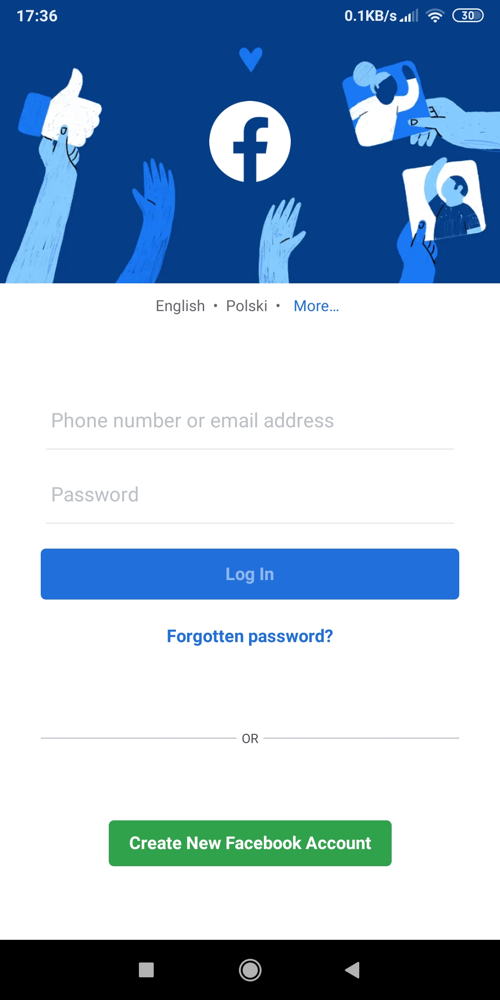
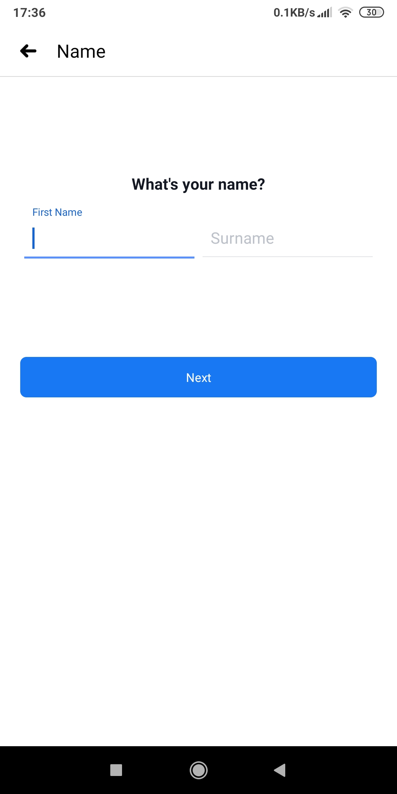
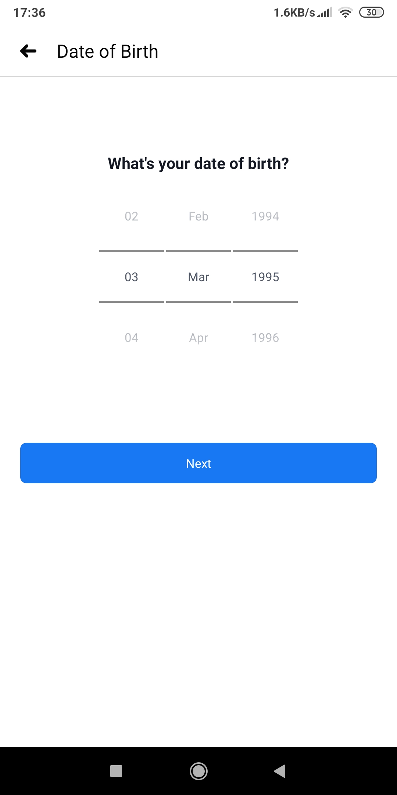
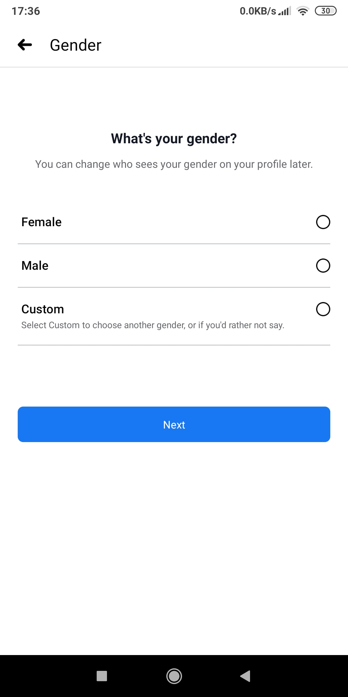
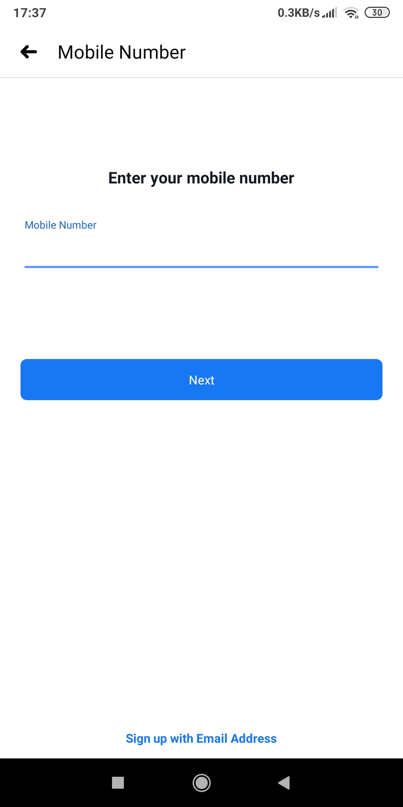
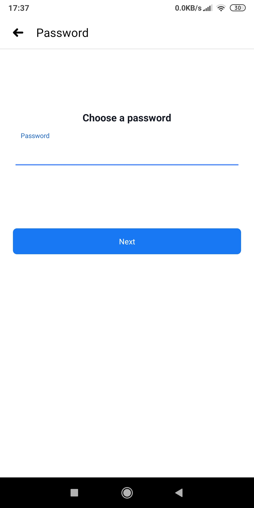

Social Media
Justin Flood
Facebook is the largest social media network in the world, with around 2.5 billion monthly users. It is a platform that offers you a space online to share photos, videos and updates on your daily life. People create profiles on facebook, which can be personal or non-personal, which then allows them to form relationships with others online. Facebook can be used on your phone, Laptop or pretty much any device with a connection to the internet. It is used as a form of entertainment for many, as people post videos and share stuff about their daily lives. Facebook offers more than just entertainment value though. It can help you meet people, form relationships and even promote a business.
The facebook application is available on both android and apple systems, start by searching the app in each systems respective app store.
You should then find the application on your phones home screen, when you have found it, tap the application to open it and you should see a similar screen to the image on the right, the select create a new account.
You will be asked for basic information such as your name, date of birth and gender.
You will finish setting up your account by supplying your mobile number or email adress , creating a password and finally agreeing to facebooks terms of service
     Facebook is a social media platform that allows people to share their opinions on specific topics. At times however the ability to share your own opinion of something is misused either by people with conflicting opinions wanting to start an argument and becoming vicious towards one another or by people purposely trolling people so that they can get a reaction from them so everyone can see it.
As Facebook is a free social media platform, it is necessary for them to make money in other ways. One of the more popular ways is by selling your personal information to advertisement companies, so that specific advertisements will appear in your newsfeed. On Facebook nothing you write is private. If you were to comment on a post made by someone, other people can see what you wrote and reply to that specific response. Another reason to be cautious while on Facebook is because of the increase in cyberbullying online. This form of bullying is especially bad as people don’t feel any remorse for the things they say or do as they are protected by a screen and it allows them to say things that they would never say in person.
Fake accounts are also extremely dangerous. As there is no real verification method to go through when creating a Facebook account, there have been cases where people have made false accounts for malicious purposes. Such as a peadophile luring kids out in public or an account made to mock someone. You must make sure that you don’t give out any personal information that you don’t want to be known to other users such as, Facebook asks if you’d like to use your phone number to log you into your account, however this allows other people who view your page to see your phone number. You may also want to reinforce your password security by making sure that it wasn’t used before and that it is something unique to you, otherwise people may access your account and see personal information or private conversations.
Social Media applications were not specifically designed for educational purposes, however it has the potential to further education inside a classroom. Facebook is most appropriate for discussing and sharing world news and major events. The main reason Facebook is used is to connect with friends, family etc. While Facebook is mainly used to connect with people you already know it can also be a great tool for networking. Facebook creates a sense of community amongst its users and this can lead to a widespread of ideas and collaborations.
Similar to creating an online community Facebook can be used to strengthen communication. Students and teachers and students and their peers are now able to share and join their work together easier than ever. Students can now communicate with their classmates and teachers about their course content, besides from this they can also arrange times to work on group projects. Another way Facebook can be used for teaching and educational benefits is the development of computer skills. Students are developing writing and communication skills through self-expressing posts as well as several other skills such as editing and proofreading.